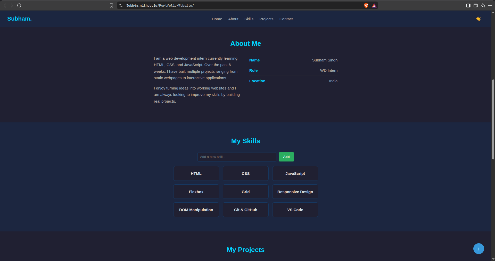
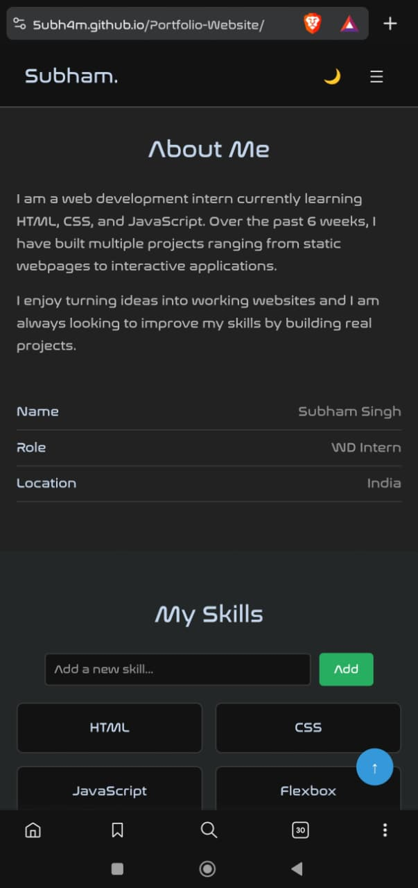
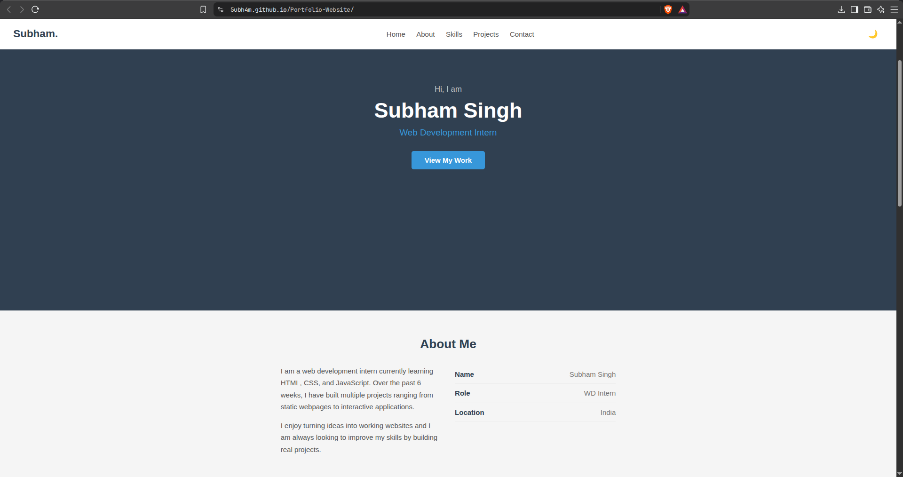

Subham Singh | WD Week 6
Portfolio Website
The objective of this project was to build a complete, responsive, and interactive personal portfolio website using HTML, CSS, and JavaScript. The goal was to apply all the web development concepts learned during the 6-week internship into a single, deployable project.
This is a single-page portfolio website that showcases my skills, projects, and contact information. The website is fully responsive and works across desktop, tablet, and mobile devices. It includes a dark mode toggle, project filtering, a skill management system, project search, contact form validation, and a back-to-top button. The entire project was version-controlled using Git and deployed on GitHub Pages.
Desktop View:

Mobile View:

Light Mode:

GitHub Repository: github.com/5UBH4M/Portfolio-Website
Live Website: 5ubh4m.github.io/Portfolio-Website
One challenge was making the navigation work smoothly on mobile. The hamburger menu needed to open and close properly, and the links had to auto-close after clicking. Another issue was the sticky navbar covering section headings when navigating — the scroll position would land slightly below the heading. Making the dark mode consistent across all sections also required careful handling of every element's colors.
For the mobile menu, I used classList.toggle to show/hide the nav links and added an event listener to close the menu when a link is clicked. The scroll offset issue was fixed by adding scroll-padding-top to the html element. For dark mode, I used a single class on the body and wrote CSS selectors like body.dark .element to handle each component's colors consistently.
This project helped me understand how HTML, CSS, and JavaScript work together in a real project. I learned how to structure a webpage using semantic tags, create responsive layouts with Flexbox and Grid, and make pages interactive using DOM manipulation and events. Working with Git taught me version control and maintaining a clean commit history. Deploying on GitHub Pages showed me how to take a project from code to a live website.